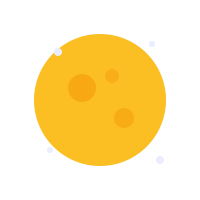
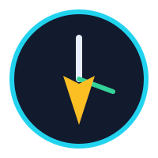

我是邓子贤。下面这段经历，是我做这个网站最初的原因。
初三那年，功课一下子变多了。白天总觉得时间不够用，于是我开始把写作业、复习的时间往晚上挪。 一开始只是到 11 点，后来慢慢变成 12 点、1 点。夜深人静的时候，手机就在旁边， 写完作业总忍不住再刷一会儿，不知不觉就到了凌晨两三点。
那时候我还挺得意，觉得自己「多赚」了几个小时。可我没有意识到，熬夜欠下的债， 第二天是要加倍还的。

熬夜的后果，不是立刻爆发，而是慢慢渗透进我白天的每一个动作里。
上课老师提问，我要愣一两秒才反应过来；同学喊我，我常常「慢半拍」。打游戏时更是明显，敌人的子弹都快到脸上了，我的手才刚动。
一节课四十分钟，我能走神二十分钟。眼睛盯着黑板，脑子里却像在放电影，重点讲了什么根本记不住。
追着看快速移动的东西时，眼睛发酸、画面发糊。打篮球时接不住快球，连看球赛都觉得跟不上球的轨迹。

真正让我决定改变的，是一次月考后的崩溃。我明明觉得自己「学得很晚很努力」，成绩却不升反降。 那一刻我才明白：效率，比熬到几点更重要。
我开始给自己定规矩：11 点前必须躺下，手机放到够不着的地方；中午坚持小睡 20 分钟。 一开始很难熬，但坚持两三周后，我发现早上起来不再昏昏沉沉，上课居然能跟上老师的节奏了。
最让我惊喜的是，打游戏的「手速」反而变快了——不是因为我练得更多，而是因为我睡得更饱。
现在回想起来，那段时间的「省时间」其实是最大的浪费。 睡眠不是偷懒，而是给大脑「充电」和「整理内存」。 我把这段经历做成了这个网站，希望能提醒每一个正在熬夜的你： 早点睡，你的反应力、注意力和动态视力，都会谢谢你。